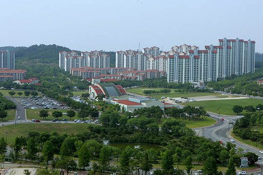
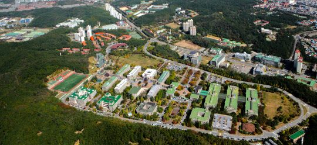
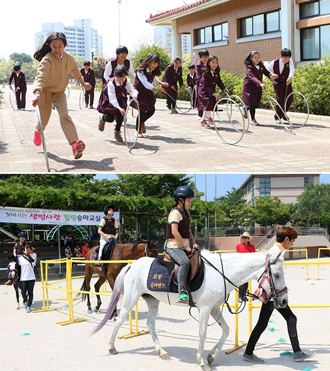

연재일 2014-11-20출처 조선일보 프리미엄조선 연재
철거민의 이주 행렬, 수녀원과 고아원의 폭파를 지켜보는 포항시민이 포항종합제철 건설을 확신할 수밖에 없었던 1968년 여름, 실상 포스코의 미래는 여전히 오리무중이었다. KISA와 일반기술계획(GEP)의 문제점들에 대한 협상을 진행하고 있으나 난관에 봉착한 차관 도입은 한 걸음도 더 옮기지 못하고 있었다.
그러나 박태준은 묵묵히 ‘희망의 시간표’에 따라 주요 결정들을 밀고 나갔다. 부지정리 공사가 마무리되면 대규모 건설공사에 투입할 사원을 대거 뽑아야 했다. 문제는 사원 급증에 따른 ‘주택’과 ‘학교’였다. 유능한 인재들을 동해남단 변방의 모래밭으로 불러 모으기란 쉽지 않을 것이었다. 한 번 들인 발길을 붙박게 하기란 더 어려울 것이었다. ‘유능한 인재들을 모아서 제대로 길러야 성공할 수 있다. 그래야 세계 최고 제철소로 성장할 수 있다’라는 명제 앞에서 박태준은 3가지 원칙을 확정했다.
첫째는 인간에 대한 기본적 예의와 관련된 것으로, 자신과 함께 일하는 사람들이 사람답게 살아갈 수 있는 환경을 조성해줘야 한다는 것. 이는 대한중석 사장 시절에 체득하여 부분적으로 실천한 원칙이다.
둘째는 우리나라 성인들의 소망에 부응하는 경영정책을 펼쳐야 한다는 것. 미래를 보장하는 안정된 직장을 얻으려는 소망, 내 집을 소유하려는 소망, 자녀를 좋은 학교에서 공부시키려는 소망 등 60년대 기성세대가 지닌 보편적 소망을 주시하여 정한 원칙이다.
셋째는 길게 내다보면서 교육시설과 주거환경을 세계 최고로 가꿔나가야 한다는 것. 그는 유럽을 방문했을 때 짬을 내서 공장과 제철소만 둘러본 것이 아니라 숲속의 학교시설과 주택단지도 유심히 살폈다. 시샘 나도록 부러운 환경을 바라보는 그의 가슴에는 언젠가 우리나라 사람들도 저런 환경에서 공부하고 살아가야 한다는 포부가 들어앉았다. 그때의 포부를, 박정희의 굳건한 신념적 동지로서 그 포부를 이제부터 적어도 자기 영역 안에서는 모범적으로 실현할 각오였다.
1968년 포항시는 조악한 주택이나마 보급률이 60%에 못 미쳤고 초등학교 콩나물교실도 학생수용력이 50%에 미달하여 2부제 수업으로 꾸려나가는 형편이었다. 자연환경은 양호한데 위생 상태는 열악했다.
깨끗한 바다, 길고 넓은 백사장, 울창한 솔숲이 어우러진 국내 최고 해수욕장을 보듬고 있지만, 여름엔 ‘베트남 모기와 사돈을 맺어야 한다’고 할 만큼 독한 모기들이 들끓고 겨울엔 사막을 방불케 하는 모래바람이 몰아쳤다. 하수시설도 형편없어서 파리와 모기가 들끓었다. 시가지를 벗어나 포항제철 부지로 가는 도로변에는 갈대밭이 우거져 있었다.
포항에 모여든 포스코 사원들 대다수는 가족을 두고 혼자 먼저 와서 하숙을 하거나 여관에 기거하는 생활을 할 수밖에 없었다. 박태준은 후생복지의 기본적 인프라부터 시급히 갖춰야 한다고 판단했다. 문제는 돈이었다. 내자 조달의 속도가 느려터지고 차관 도입은 심야의 산길과 흡사한 상황에서 어디서 어떻게 돈을 구해올 것인가? 사원주택단지 부지. 이 문제의 해결을 위해 박태준은 무턱대고 은행 문을 두드려보기로 했다. 두 군데 실패하고 세 번째로 노크한 곳이 한일은행(우리은행) 하진수 행장의 사무실이었다.
“박 사장님, 포철은 잘돼갑니까?”
그는 진척상황과 장래계획에 대해 열변을 토하고 용건을 밝혔다. 하 행장이 환히 웃었다.
“담보가 없어서 규정상 대출이 불가능합니다. 하지만 박 사장님의 열의는 신뢰할 수 있습니다. 예외 경우를 적용해서 특별히 20억 원을 대출해드리겠습니다. 박 사장님의 열의를 담보로 하니, 반드시 성공하셔서 우리 손으로 좋은 철강을 생산해주세요.”
사원주택단지 부지를 마련할 길이 열렸다. 박태준은 한일은행을 주거래은행으로 정했다. 행장에 대한 보은이었다.
박태준은 ‘내 집 마련’ 제도를 만든다. 사원주택단지 안에 자기 집을 갖겠다는 직원들에게 회사가 장기 저리로 대출해주는 조건을 포함했다. 그는 임대주택이나 회사주택을 거부했다. 소유권을 가져야만 ‘내 집’이란 애착으로 열심히 관리할 테고, 인플레이션이 심한 시기에는 심리적으로 안정될 수 있다고 판단했다. 그래서 그렇게 마련한 사원들의 ‘내 집’을 임대주택이나 회사주택과 구분하기 위해 ‘자가주택’이라 불렀다.
박태준은 부동산투기를 예방하기 위해 후보지 물색을 서두르며 직접 현장답사에 나섰다. 고려할 요소는 많았다. 출퇴근 거리, 단지 규모, 자연 환경, 학교 위치, 교통편, 각종 인프라설비, 비용 등. 그가 손수 찍은 자리가 포항시 효자동 야산 지역이었다. 형산강 다리를 지나 회사 정문까지 거의 직선 대로로 연결할 수 있는 위치, 자동차로는 10분 소요. 다만, 무덤들이 많았다. 공동묘지의 야산이었다. 누구든 얼른 꺼림칙한 기분을 느낄 만했다. 그래서 반대의견이 나왔다. 하지만 박태준은 세게 반박했다.
“우리나라 양지 바른 야산에는 반드시 묘지들이 있다. 더구나 우리나라에는 묘소를 명당에 쓰는 전통적인 풍습이 있지 않나? 그러니 우리가 잡은 자리는 틀림없이 명당이다. 조상들의 안목을 믿고 받들어야지.”
뜻밖에도 국회가 난리를 쳤다. 박태준은 귀가 아팠다. 공장 지을 돈도 없는 형편에 집 짓고 외국인 숙소 지을 돈이 어디서 났느냐는 힐난에서, 제철공장 지으라고 보내놨더니 엉뚱하게 부동산투기나 하고 있다는 모함까지. 그의 인격은 국회에서 하루아침에 박살이 났다. 그러나 박정희는 아무런 반응이 없었다. 국회의원들의 박태준에 대한 비난이 대통령의 귀에는 들리지 않는 모양이었다. 그 침묵은 믿고 맡겼으니 ‘소신껏’ 밀고 나가라, 그 뜻이었다.

박태준과 포스코의 사원주택단지 조성이 한국의 기업경영 풍토에서 얼마나 선구적인 사원복지 정신이며 실천이었을까? 그가 은행 대출을 받아 사원주택단지 부지를 마련한 때로부터 6년쯤 지난 무렵인 1975년 9월 1일 《동아일보》는 다음과 같은 기사를 쓴다.
<정부가 금년에 근로자의 생활보호와 재산형성을 지원하기 위해 기업의 사원주택건설자금으로 50억원을 융자하기로 했으나 사원복지문제에 대한 기업주들의 무관심으로 8월말 현재 단 1건에 5천7백만원밖에 융자되지 않았다. 기업이 공업단지 등에 사원주택을 지을 경우 가구당 1백만원을 연리 8%로 융자, 모두 5천 가구를 짓도록 지원키로 했으나 8월말까지 융자된 것은 포항제철의 5천7백만원 1건뿐이다.>
포스코의 성장과 더불어 ‘낙원 같다’는 세평을 얻게 되는 포스코의 사원주택단지. 공장의 말뚝도 박기 전에 그 부지 조성공사를 시작했던 박태준은 기존 자연환경을 최대한 살리면서 온갖 나무를 심어 철저히 가꾸고, 인공연못을 꾸미고, 숲속 산책로를 내고, 국내외 내빈들과 외국인 기술자들의 숙식문제를 해결할 영일대 청송대 백록대를 짓고, 단독주택 아파트 쇼핑센터 아트홀 운동시설을 배치하고, 사원 자녀들을 위해 유치원부터 고등학교까지 국내 최고 수준으로 차례차례 설립한다.

1982년부터 광양제철소를 건설할 때도 박태준은 포항의 경험을 그대로 적용한다. 아니, 한 걸음 더 나아간다. 공장이든 주택단지든 학교시설이든 문화시설이든 스포츠시설이든 포항에서 얻은 아쉬움을 다 해소하는 레이아웃과 디테일을 적용하는 것이다. 바야흐로 포스코가 세계 최고 수준에 접어든 1980년대 중반에 박태준은 또 다른 ‘원대한 설계도’까지 완성한다. 포항공과대학교(포스텍), 포항산업과학연구원(RIST), 포항방사광가속기를 탄생시키는 설계도이다.
포스코 주택단지에는 숱한 방문객이 다녀간다. 둘러본 이들은 이구동성으로 ‘사람은 이런 환경에서 살아야 한다’는 모범사례를 목격한 감흥의 탄성을 아끼지 않는다. 김수환 추기경의 “낙원 같다”는 탄성도, 빅토르 사도니비치 모스크바대학 총장의 “레닌 동지가 꿈꾸던 이상이 이것이다”라는 눈물 글썽한 찬사도 그래서 나올 수 있었다.
물론 박태준의 그 선구(先驅)에 대한 찬사는 오랜 시일이 흐른 다음에 찾아온 것이었다. 1968년 11월, 이 지점에 섰을 때, 박정희와 박태준의 포항제철에는 아무 것도 없었다. 박정희의 종합제철 건설에 대한 강력한 의지와 확고한 신념, 박태준의 순정한 사명감과 예리한 판단, 명석한 두뇌와 뜨거운 가슴을 갖춘 소규모의 포철 임직원, 영일만의 황량한 공장부지. 이들이 전부라 해도 과언이 아니었다. 공장 지을 밑천 1억 달러와 전무한 제철기술, 대체 KISA는 언제쯤 그것들을 한국 영일만으로 싣고 올 것인가?
